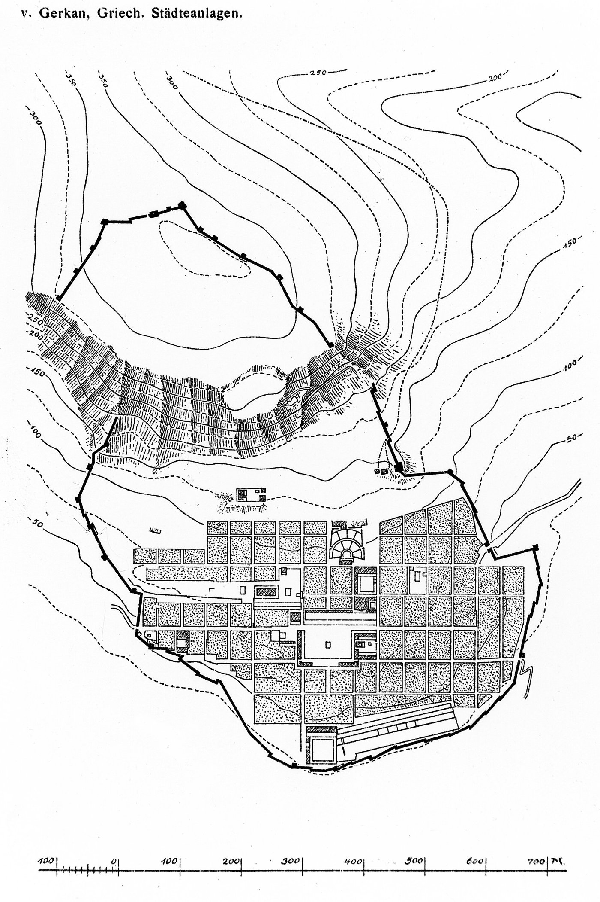

Priene, built on terraces at the foot of the steep cliffs of Mount Mykale, is one of the finest examples of a planned ancient city: streets crossing at right angles, equal housing blocks and harmoniously placed public buildings read like a textbook of ancient urbanism. The elegant standing columns of the Temple of Athena, to which ancient sources say Alexander the Great contributed, form an unforgettable sight against the cliff. A small, remarkably preserved council house and a theatre with seats of honour complete the picture.
⏳ Journey through time
| Then | Today |
|---|---|
| A city on terraces at the foot of Mount Mykale, overlooking the plain | A neighbourhood climbing a slope step by step |
| Streets meeting at right angles, house blocks of equal size | A planned new district |
| Temple of Athena: ancient sources say Alexander the Great funded it | A landmark bearing a famous donor's name |
| A small but exceptionally well-preserved council house | A town council chamber |
| A theatre with seats of honour in the front row | A hall with VIP seating |
| Once close to the sea; silt pushed the shore away | An old port town now kilometres inland |
🎧 A day in Priene
The year is 300 BC. The road from the plain climbs terrace by terrace. The streets look as if drawn with a ruler; finding any house is easy.
From the agora you walk up to the Temple of Athena. Behind its white marble columns rises the steep cliff; on the temple wall an inscription bears the name of Alexander the Great.
In the afternoon the city's affairs are debated in the council house. Towards evening the leading citizens take the seats of honour in the theatre's front row.
Today the sea is far away; silt from the Maeander has filled the plain. A few columns of the Temple of Athena have been raised again and stand out before the cliff once more.
Figures are estimates; sources give different values. The drawing is illustrative, not to scale.
Visitor guide
🚌 Getting there
Priene lies just above Güllübahçe in the Söke district of Aydın, about 15 km from Söke. Minibuses run from Söke to Güllübahçe.
⭐ Don't miss
- The standing columns of the Temple of Athena
- The theatre with its seats of honour
- The very well-preserved council house (bouleuterion)
- The grid street plan and houses
- The cliffs of Mount Mykale and the view over the Maeander plain
🏺 Finds and artworks
- Some sculpture and finds from the Temple of Athena and the houses were taken in the 19th century to the British Museum in London and to Berlin
👤 Notable people
- The Temple of Athena was designed by Pytheos, also architect of the Mausoleum of Halicarnassus
- Alexander the Great supported its completion
- The sage Bias was from Priene
💡 Tips
A shady path winds through the pines, but bring water anyway. Combine with Miletus and Didyma; the late-afternoon light is ideal for photos.
Site plan

Plan: Wikimedia Commons · CC BY 4.0 · Wikimedia Commons
Frequently asked questions
Where is Priene Archaeological Site?
Priene Archaeological Site is located in Söke, Aydın (Aegean). Use the map or the directions button on this page to get there.
How long does it take to visit Priene Archaeological Site?
Average visit time: 1.5–3 hours.
Is the Museum Pass valid at Priene Archaeological Site?
Usually valid at museums and sites run by the Ministry.
What period does Priene Archaeological Site date from?
Priene Archaeological Site dates from the Hellenistic period.
What else is there to see near Priene Archaeological Site?
Nearest cultural sites: Ancient City of Myus (~14 km), Milet Archaeological Site (~14 km), Milet Museum (~15 km).
Is there an audio guide for Priene Archaeological Site?
Yes. With the Listen button on this page you can hear the introduction in 7 languages (Turkish, English, German, Spanish, Arabic, Chinese, Hindi).
♿ Accessibility
No verified accessibility information for this place yet. We collect details from visitors and museum staff and publish them here once checked.
At museums and archaeological sites run by the Ministry of Culture and Tourism, visitors with disabilities and one companion enter free of charge on showing a disability ID or document. Please confirm current conditions with the site before you go. Accessibility guide →
♿ Share accessibility info
Related guides
Photos
Places to stay and eat nearby
Want your business to appear here? Advertise